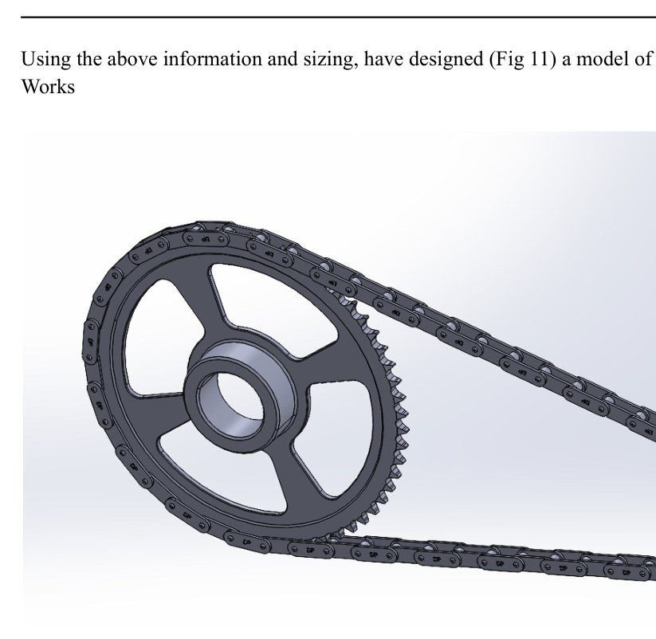
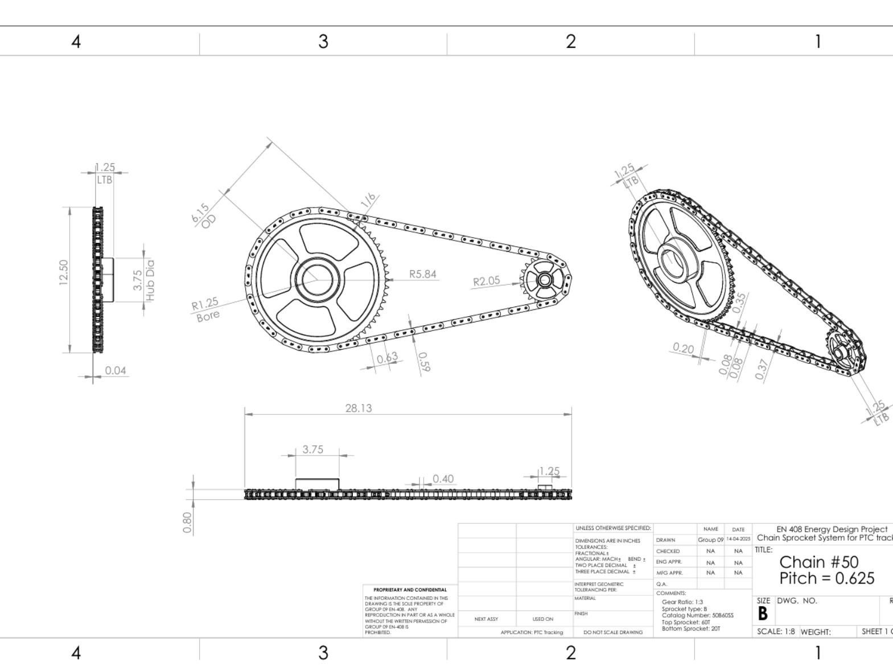

Overview
The project developed a single-axis drive system for a full-size parabolic trough collector. The design starts with collector geometry and torque demand, then selects the motor, transmission, chain drive, tracking logic and structural components.
Drivetrain sizing
Acceleration torque was small relative to the aerodynamic load. At the assumed 10 m/s wind condition, wind torque was estimated at about 81 Nm, making it the dominant sizing case. A stepper motor with a 1:20 planetary gearbox and two 3:1 chain stages produces the required 180:1 reduction.

Tracking control
An open-loop astronomical tracking strategy calculates sunrise/sunset and solar geometry from date and location. The proposed motion converts 90° of motor rotation into roughly 0.5° of collector rotation.
Engineering definition
The report includes component selection, material comparisons, a bill of materials, CAD assembly and dimensioned drawings. The work is a complete design study; a full-scale physical tracker is not documented as fabricated or experimentally validated.

Source material
The project narrative above is condensed from the submitted coursework/thesis and keeps design estimates, simulation results and demonstrated hardware distinct.